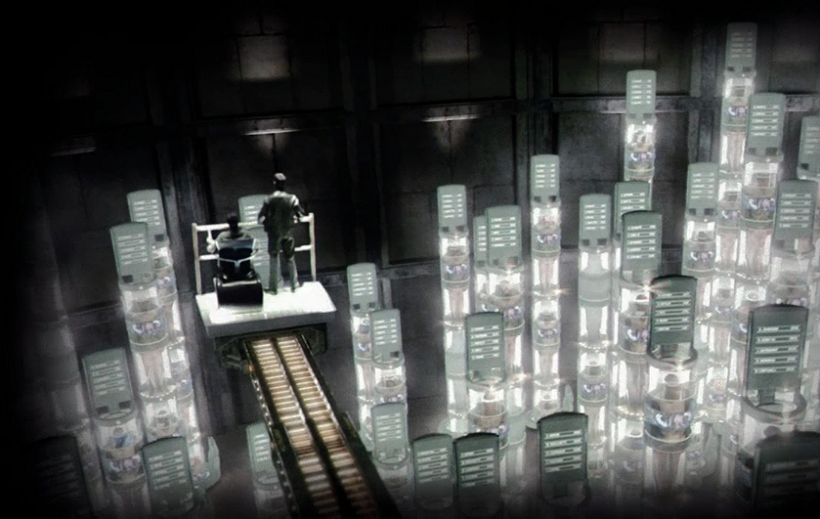
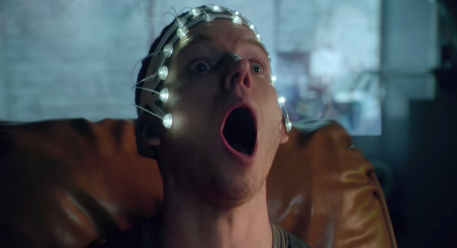

Imagine the scenario: someone wants you dead. This person hates your guts so much that they decided that the world would be a much better place without you. If this person’s IQ is at least equal to that of an average badger, you are as good as dead.
But surely, I can hear you say, the killer won’t get away with it. Given the highly-advanced forensic techniques (such as DNA profiling) and technological capabilities (such as facial recognition systems) available to the police today, the crime will be investigated, the perpetrator promptly caught, convicted and punished with the full force of the law, which means that the offender will be subject to a lengthy prison sentence, or, if the deed was committed in a country that practices capital punishment, the murderer will be put to death.
However, that is completely beyond the point. Crime is crime, and punishment is punishment. Punishing the killer may do just that (i.e. punish them), may prevent them committing more crimes in the future, it may even serve as a deterrent to other would-be offenders. But it is not going to change anything for you, as, notwithstanding the consequences, the perpetrator has achieved their objective – you are dead and nothing will bring you back. Do you see my point?
But what if there was a way to pinpoint the place and time of every serious crime about to happen and then send the law enforcement officers to catch the would-be-perpetrator before the crime is committed?
This precisely is the premise of the 2002 science fiction thriller film Minority Report directed by Steven Spielberg and loosely based on the short story of the same name by Philip K. Dick. The storyline of the film follows members of the Washington, D.C.’s Pre-Crime Unit as they devise and put into practice the ultimate crime-prevention scheme: Precognition of serious crimes. The method is based on premonitions of three ‘Precogs’ – Dash, Arthur and Agatha – siblings with paranormal abilities who ‘pre-visualise’ crimes before they are actually committed.
The upcoming science fiction crime television drama Minority Report is set in Washington, D.C. in the year 2065 (eleven years after the events of the film). After the Crime Precognition technique was compromised and its results put into doubt, the Pre-Crime Unit was dismantled in 2054 and all would-be-offenders currently in custody were pardoned (although many were placed under surveillance in case of their would-be-crimes actually happening). Now, in 2065, crime-solving is different, and law enforcement officers rely more on sophisticated forensic techniques and reliable technology than on the questionable instincts and ambiguous visions of the Precogs.
However, one of the Precogs, Dash (Stark Sands), driven by his terrifying, but fragmented visions of the future, has returned in secret to help a shrewd, though a bit brash, police detective Lara Vega (Meagan Good) attempt to stop the murders that he sees in his premonitions.
As Lara and Dash fight together future crime, they are forced to forge an uneasy alliance with Dash’s ambitious and manipulative twin brother, Arthur (Nick Zano), who uses his extraordinary ability to advance his own self-interest, and elude others who will stop at nothing to exploit their precognitive abilities. Further complicating matters are Lara’s newly appointed boss Will Blake (Wilmer Valderrama) and Dash and Arthur’s reclusive, yet ingenious, foster sister, Agatha (Laura Regan), who seemingly wants only the best for her two brothers, but may be playing a longer game than anybody suspects.

The TV series, written and developed by Max Borenstein is executive produced by Kevin Falls, Steven Spielberg, Darryl Frank and Justin Falvey, and produced by 20th Century Fox Television, Amblin Television and Paramount Television.
Minority Report television series is scheduled to premiere on FOX on 21 September 2015.
TRIVIA: American actor Daniel London will reprise his role as Wally the Caretaker (the geeky scientist looking after the Precogs) from the original Minority Report film.